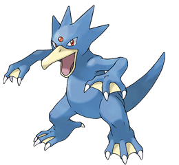

Pokémones
1.Psyduck
“Tiene dolores de cabeza tan fuertes que lo hacen llorar, como consecuencia a veces usa la psicoquinesis sin querer”.
2.Golduck
“Se dice que la parte roja de su frente otorga poderes sobrenaturales a los que poseen uno, por lo que en el pasado se cazaba de manera excesiva”.
3.Mankey
“Puede enfurecerse espontáneamente. Todo el mundo se aleja de él cuando entra en cólera, y la soledad resultante lo enfada todavía más”.
4.Gengar

“Si sientes un escalofrío repentino, es la prueba de que un Gengar está cerca. No hay escapatoria. Ríndete”.
5.Cubone

“Cuando piensa en su difunta madre, llora a viva voz. Si un Mandibuzz escucha sus gritos lo atacará desde el aire”.
6.Charmander

Estos Pokémon son del tipo fuego, Charmander al igual que Bulbasaur, se te da a elegir al principio del juego. Este Pokémon es bastante fuerte al principio, lo que te permitirá ganar y ganar puntos de experiencia. te será de muy poca ayuda en el primer gimnasio, y en el segundo… ni hablar te lo harán polvo, tendrías alguna esperanza si lo evolucionaras en un nivel 30, lo que es bastante difícil tomando en cuenta que los Pokémon que te salen son realmente unos inútiles en cuanto a nivel, después de estos dos gimnasios los demás serán pan comido. Cuando evoluciona en Charmeleon se convierte en un Pokémon bastante completo en cuanto a ataques, ya que estos incrementan considerablemente, y comienza a ser la máquina de fuego más destructora que pudieras conocer si lo trabajas con ganas. Bendito seas cuando tengas un Charizard, este es uno de los Pokémon más fuertes del juego. Además que también es Volador. Trabájalo bastante y no tendrás rivales, los Pokémon de agua por fin temblaran ante tu presencia, una verdadera ayuda al final del Juego.
7.Squirtle

Este Pokémon es del Tipo Agua, y se da a elegir al principio del juego, lo mismo que los otros dos. Este Pokémon al principio Es más o menos fuerte, yo diría menos que más, sus ataques son buenos para matar un par de moscas, por que para vencer Pokémon…Es débil al principio, pero luego que comienza a aprender nuevos ataques, comienza a convertirse en un demoledor. Crece más rápido que los Pokémon anteriores. El primer Gimnasio será realmente Fácil con este Pokémon ya que sus ataques de agua harán, simplemente barro los Pokémon de Brock. En el Segundo sus ataques de agua serán ineficaces. Cuando Evoluciona en un Wartortle será bastante fácil ganar puntos de experiencia, ya que gana bastante poder de ataque y sus ataques de agua son muy efectivos. Cuando Evoluciona en un Blastoise, tendrás a uno de los Pokémon más fuertes, sus ataques dejarán temblando de miedo a tus rivales.
8. Pidgey
Este es uno de los mejores Pokémon que puedes tener en tu equipo. Este es un Pokémon del tipo Volador, Pidgey pasa de nivel muy rápido, te darás cuenta que le asignas un par de peleas y ya está al mismo nivel de tu Pokémon principal. Incluso podría superarlo al principio. Este es un gran Pokémon para empezar, lo encuentras en todos lados y tiene ataques muy fuertes que serán de mucha ayuda. Pidgeotto es un Pokémon muy fuerte cuando le enseñas FLY (VUELO) , este ataque es realmente poderoso, aunque a algunos Pokémon no le harás mucho daño. Pidgeotto es muy difícil encontrarlo en las versiones Roja y Azul, lo encuentras al llegar a Pueblo Paleta por el Mar desde Isla Canela, en la Orilla Izquierda, En cambio en la versión Amarilla sale en todos lados. Pidgeot es Fuerte y muy rápido, aunque su especial es demasiado débil para su nivel.
Ekans

El Pokémon de Jessie es del tipo venenoso, lo encontraras sólo en la versión Roja. Es un Pokémon Bastante Común no hay mucho que decir, se encuentra al lado de Ciudad Carmín. Arbok no tiene grandes habilidades tampoco, por lo de venenoso no se lo quita nadie, y seguirá siendo débil por eso. lo encontrarás en la Calabozo Desconocido, que está al lado de Ciudad Celeste.
10. Pikachu

El Apreciado y querido Pikachu….. Estos Pokémon son del tipo Eléctrico. Muchos creadores de páginas web de toda habla hispana, hablan de Pikachu de un Pokémon inservible, que no tiene el poder suficiente… , si bien no los contradigo, creo que con algo de trabajo éste Pokémon es bastante útil, no digo que sea el Pokémon Más Poderoso, pero es útil. Sus ataques eléctricos son bastante buenos, aunque su status indica lo contrario. Este Pokémon es rápido lo que no lo hace tan malo. Raichu no tiene gran show. Lo peor de este Pokémon es lo difícil de hacer aumentar de Nivel, ya que requiere demasiados puntos de experiencia.